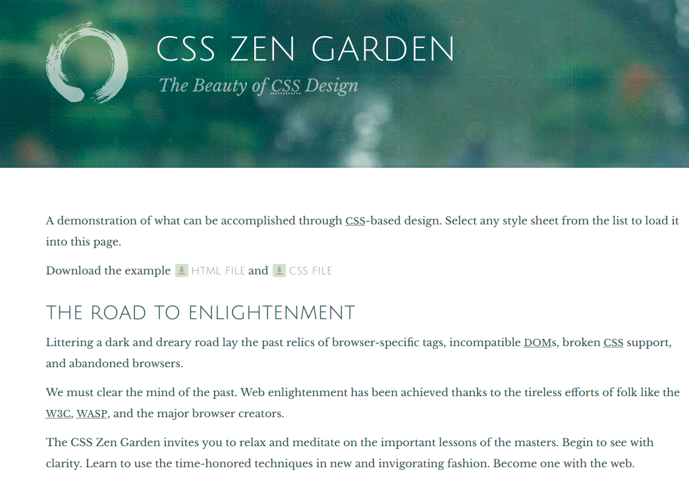

I aim to build programs that enrich people's lives.
Fun-Pass-Gen Password Generator
A terminal app programmed in Ruby where a memorable and secure password is generated based on the user's answers to a set of questions.
Click here to learn more.
Zen Garden CSS
A submission to a design challenge to style a given html page using css.
This image is a placeholder and the project is currently a WIP
I'm a full-time student studying at Coder Academy where I’m developing the knowledge and skills to utilise best practices in programming.
In between classes, I strive to maintain a yoga and calisthenics practice to keep myself healthy in mind and body. I am also very interested in emerging technologies like VR & AR.
Currently working on: Ruby, HTML & CSS.
I was working as a cpa qualified management accountant in the education and private sectors, managing budgets and analysing financial trends before deciding to study programming.
In between, I travelled extensively for the joy of experiencing new places including a memorable stint as a volunteer construction worker in Cuzco, Peru.